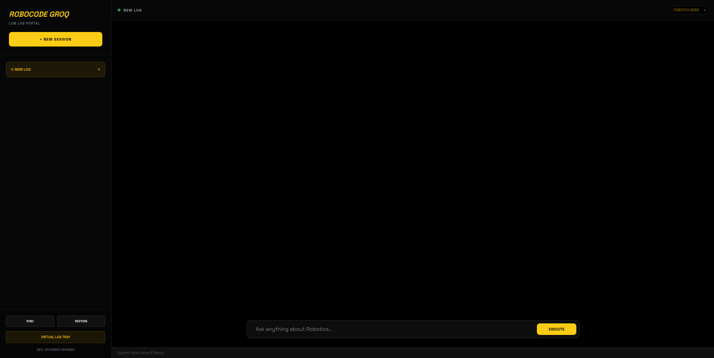

RoboCode
RoboCode OS — an "LVM Lab Portal" combining a virtual experiment bench, an AI session engine, and a direct launch point into Arduino/Wokwi. One of the first major projects.

WHAT I BUILTA lab portal with a Robotics Mode and an Academic Mode, session sync/restore, a virtual experiment bench, and a direct link out to Arduino Wokwi to launch a real simulated circuit. It was built around combining robotics, software, AI, and education in one place rather than treating them as separate.
HOW IT WORKSThe portal runs on a Groq-backed Llama-3 engine for the AI session layer, with a lightweight session tray for saving and restoring lab state, and a bench view for running virtual experiments before jumping into Wokwi for the real circuit simulation.
WHAT I LEARNEDThis was the starting point of the whole trajectory — the first time software, AI, and hardware ideas were combined in one project instead of practiced separately. It set the direction that later became SENTRY and AGLON: build something that connects disciplines rather than staying inside one.
NEXT STEPNot actively maintained as a standalone product — its ideas carried forward into later, more focused projects.